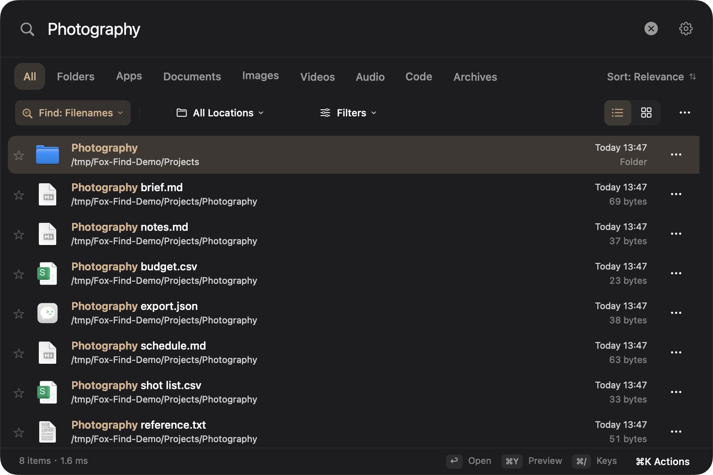

Names, apps, a familiar place.
Search filenames, launch apps, use pinyin initials, or narrow by folder, type, date and size. Try ext:pdf or a saved search.
Fox Find 0.8.3 · Free & open source
The filename you half remember. A line inside a PDF. Words in a screenshot. Bring them back, right on your Mac.
0.8.3 Preview · Apple silicon · macOS 14+ target
Ad-hoc signed. Not Apple-notarized. Read before installing.

One native window for the things you use every day. A filename index first, with optional content search for the folders you choose.
Search filenames, launch apps, use pinyin initials, or narrow by folder, type, date and size. Try ext:pdf or a saved search.
Add a content folder to search extracted text in PDFs, supported documents and images. OCR runs locally. Indexing progress tells you what is ready.
Describe an image or choose a reference to find similar pictures. Requires the separate ~865 MB model and indexed folders. Relevance varies.
Preview, reveal in Finder, favorite or drag into another app. Right-click or press ⌘ K for the actions available on that file.
No account. No cloud inference. Content processing happens on this Mac, in folders you select.
Local doesn't mean invisible. The content cache stores extracted text without separate encryption. User-only file permissions protect it.
Optional model downloads contact Hugging Face/CDN. Opening a web result uses your browser. No analytics SDK or automatic update service is enabled in this build.
Read the privacy details ↗Useful today. Still being tested across Macs. Here's what to know before you try it.
Apple silicon only, with macOS 14 as the deployment target. Release testing was done on macOS 27.0.1; other Macs and older versions still need acceptance testing. The preview is ad-hoc signed, not notarized. macOS may block its first launch. Read Apple's app-safety guidance, or build from source.
Filename search and content search use separate indexes. Add the folder in Content Search settings, allow access, then wait for indexing. Cloud placeholders, unreadable/encrypted files and unsupported formats are skipped. Semantic search also needs downloaded models and indexed segments.
No. Fox Find is an independent derivative of Oil Find's public MIT core. It does not include the proprietary Pro module or vendor app binary. Fox Find's content implementation and integration are maintained here. Upstream authors do not endorse this fork.
The source is MIT-licensed and this preview requires no paid activation. Voluntary funding will support this fork's maintenance; it won't unlock features or imply an upstream license. The Afdian link is not enabled yet. Bug reports, translations and real compatibility feedback are welcome now.
Try it on a real task. Tell us where it gets in the way.
Help make everyday search feel a little lighter.
Funding is not enabled yet. Support policy · Star it if it earns a place in your workflow.